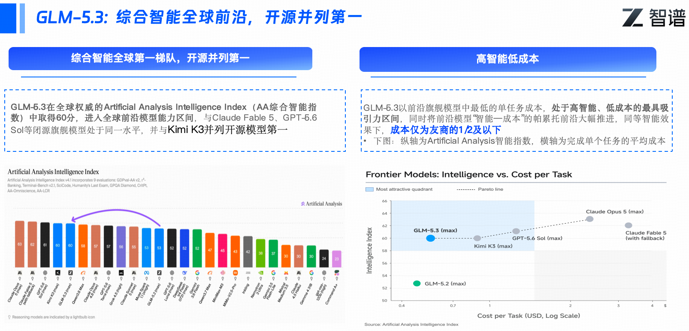
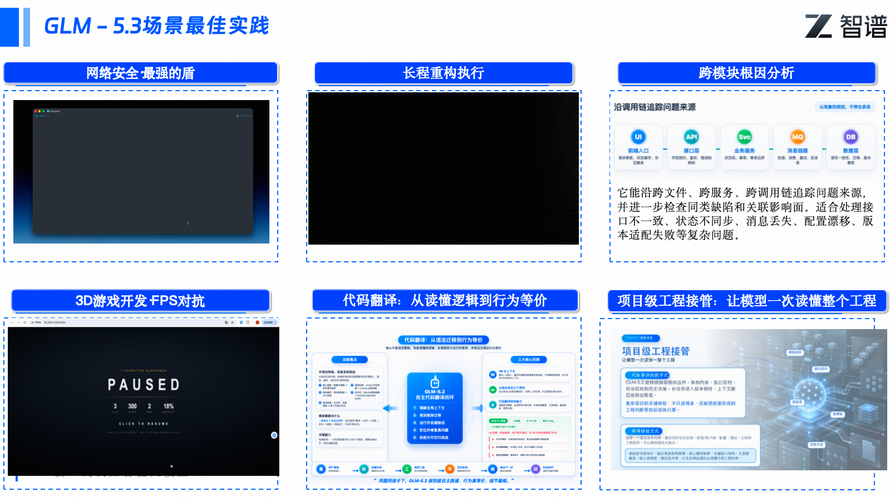
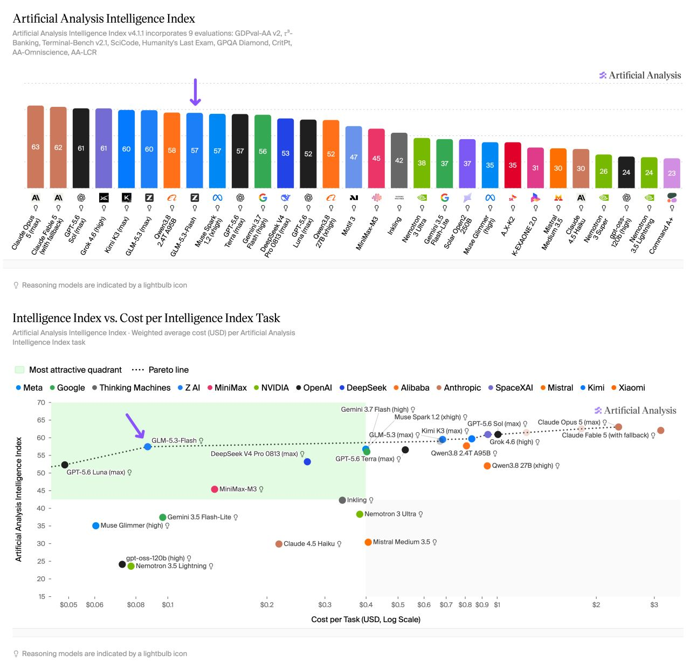
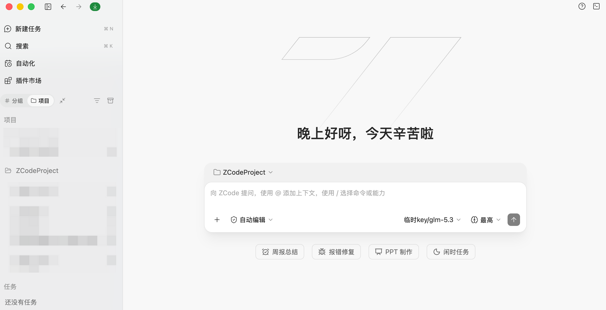
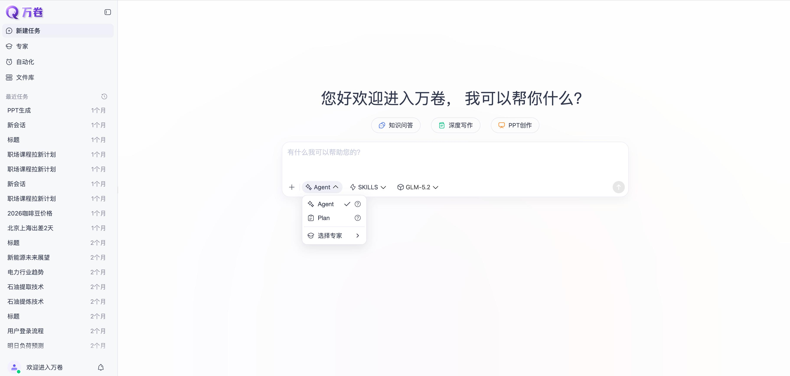

为组织提供规模化、高效率、成本可控的完整 AI 生产方案。 為組織提供規模化、高效率、成本可控的完整 AI 生產方案。 A complete, scalable and cost-controlled AI production stack for your organization.
成立于 2019 年，源自清华大学计算机系知识工程实验室（KEG）技术成果转化，拥有从底层算法、预训练框架到国产硬件适配的大模型全链路自主研发能力。 成立於 2019 年，源自清華大學計算機系知識工程實驗室（KEG）技術成果轉化，擁有從底層演算法、預訓練框架到國產硬體適配的大模型全鏈路自主研發能力。 Founded in 2019 as a spin-off of Tsinghua University's Knowledge Engineering Group (KEG), Zhipu owns the full-stack capability chain — from core algorithms and pre-training infrastructure to domestic-hardware adaptation.
* 核心数据截至 2026 年 5 月，以智谱官方最新披露为准 * 核心數據截至 2026 年 5 月，以智譜官方最新披露為準 * Key figures as of May 2026; refer to official Zhipu disclosures for the latest
让机器像人一样思考
讓機器像人一樣思考
"Machines that think like humans"
作为国内极少数拥有从底层算力优化、MaaS（Model as a Service）平台到终端应用全栈技术实力的厂商，智谱持续为全球数万家企业提供高可用、低幻觉、具备极致稳定性的大模型服务。
作為國內極少數擁有從底層算力優化、MaaS（Model as a Service）平台到終端應用全棧技術實力的廠商，智譜持續為全球數萬家企業提供高可用、低幻覺、具備極致穩定性的大模型服務。
One of the very few Chinese vendors with full-stack strength from low-level compute optimization and MaaS platform to end applications — serving tens of thousands of enterprises worldwide with high-availability, low-hallucination, production-grade LLM services.
GLM 系列覆盖文本、多模态、语音、视频等方向；模型名称、版本与可用性以官方模型目录为准。 GLM 系列覆蓋文本、多模態、語音、視頻等方向；模型名稱、版本與可用性以官方模型目錄為準。 The GLM family spans text, multimodal, voice and video. Model names, versions and availability follow the official model catalog.
与 GLM-5.2 同基座，能力提升全部来自后训练；聚焦复杂软件工程、长程 Agent、终端操作及网络安全/漏洞发现等任务。 與 GLM-5.2 同基座，能力提升全部來自後訓練；聚焦複雜軟件工程、長程 Agent、終端操作及網絡安全/漏洞發現等任務。 Same base model as GLM-5.2 — all gains come from post-training. Focused on complex software engineering, long-horizon agents, terminal operations and cybersecurity / vulnerability discovery.

* 基准图表来源：智谱官方发布材料（2026.07）
* 基準圖表來源：智譜官方發布材料（2026.07）
* Benchmark charts: Zhipu official release materials (Jul 2026)

* 基准图表来源：智谱官方发布材料（2026.07）。SWE-bench Pro、Terminal-Bench 2.1、FrontierSWE 等编码基准上，GLM 旗舰系列为开源模型第一、中国模型全项第一。 * 基準圖表來源：智譜官方發布材料（2026.07）。SWE-bench Pro、Terminal-Bench 2.1、FrontierSWE 等編碼基準上，GLM 旗艦系列為開源模型第一、中國模型全項第一。 * Benchmark charts: Zhipu official release (Jul 2026). On SWE-bench Pro, Terminal-Bench 2.1, FrontierSWE and more, the GLM flagship series ranks #1 among open-source models and #1 among Chinese models across the board.
开放平台提供文本、图片、视频、音频多模态 API 按量计费。以下为主要模型刊例价示意。 開放平台提供文本、圖片、視頻、音頻多模態 API 按量計費。以下為主要模型刊例價示意。 The open platform offers metered APIs across text, image, video and audio. Key list prices below.
| 旗舰模型 | 上下文 | 输入单价 （百万 tokens） | 输出单价 （百万 tokens） | 缓存命中 （百万 tokens） |
|---|---|---|---|---|
| GLM-5.3 / GLM-5.2 | 1M | ¥8 | ¥28 | ¥2 |
| GLM-5.3-Flash | 1M | ¥1.4 | ¥2.8 | ¥0.23 |
| GLM-5.1 | 输入长度 [0, 32K) / [32K+) | ¥6 | ¥24 | ¥1.3 |
| ¥8 | ¥28 | ¥2 | ||
| GLM-5-Turbo | 输入长度 [0, 32K) / [32K+) | ¥5 | ¥22 | ¥1.2 |
| ¥7 | ¥26 | ¥1.8 | ||
| GLM-5V-Turbo | 输入长度 [0, 32K) / [32K+) | ¥5 | ¥22 | ¥1.2 |
| ¥7 | ¥26 | ¥1.8 |
注：GLM-5.3-Flash 刊例价约为 GLM-5.3 的 1/6，上线首发期享 5 折（至 2026 年 9 月 9 日）；现阶段缓存存储限时免费。以上均为刊例原价，详情及实时变更请参考下方直达链接。
| 旗艦模型 | 上下文 | 輸入單價 （百萬 tokens） | 輸出單價 （百萬 tokens） | 緩存命中 （百萬 tokens） |
|---|---|---|---|---|
| GLM-5.2 | 1M | $1.40 | $4.40 | $0.26 |
| GLM-5.3-Flash | 1M | $0.15 | $0.50 | $0.03 |
| GLM-5-Turbo | 200K | $1.20 | $4.00 | $0.24 |
| GLM-5V-Turbo | 200K | $1.20 | $4.00 | $0.24 |
注：GLM-5.3-Flash 刊例價約為 GLM-5.3 的 1/10，上線首發期享 5 折（至 2026 年 9 月 9 日）；現階段緩存存儲限時免費。以上均為刊例原價，以 z.ai 官網為準。國際站旗艦為 GLM-5.2；GLM-5.3 詳細價格請洽銷售。
| Model | Context | Input (per 1M tokens) | Output (per 1M tokens) | Cached Input (per 1M tokens) |
|---|---|---|---|---|
| GLM-5.2 | 1M | $1.40 | $4.40 | $0.26 |
| GLM-5.3-Flash | 1M | $0.15 | $0.50 | $0.03 |
| GLM-5-Turbo | 200K | $1.20 | $4.00 | $0.24 |
| GLM-5V-Turbo | 200K | $1.20 | $4.00 | $0.24 |
Notes: GLM-5.3-Flash is list-priced at ~1/10 of GLM-5.3, with a 50% launch promo through Sep 9, 2026; cached-input storage is free during the limited-time promotion. All prices shown are list prices (pre-discount) — GLM-5.2 is the international flagship; for GLM-5.3 pricing please contact sales.
Artificial Analysis 智能指数与单位任务成本：GLM-5.3-Flash 以 57 分进入全球前沿区间（紫色箭头），单位成本仅为 Claude Opus 5 / GPT-5.5 等旗舰的零头。 Artificial Analysis 智能指數與單位任務成本：GLM-5.3-Flash 以 57 分進入全球前沿區間（紫色箭頭），單位成本僅為 Claude Opus 5 / GPT-5.5 等旗艦的零頭。 AA Intelligence Index vs. cost per task: GLM-5.3-Flash reaches the frontier band at 57 (purple arrow) — at a fraction of the cost of Claude Opus 5 or GPT-5.5.

2026 年 5 月推出的自助订阅方案：高额顶尖模型用量 + 兼容全球主流编码工具 + 团队管理与统一账单，高频用量下往往比按量 API 更划算。Coding Plan 内 GLM-5.3-Flash 额度为 GLM-5.3 的 3 倍。 2026 年 5 月推出的自助訂閱方案：高額頂尖模型用量 + 兼容全球主流編碼工具 + 團隊管理與統一賬單，高頻用量下往往比按量 API 更划算。Coding Plan 內 GLM-5.3-Flash 額度為 GLM-5.3 的 3 倍。 A self-service subscription launched May 2026: generous top-tier usage + mainstream coding tools + team management and unified billing — often cheaper than pay-as-you-go API at volume. GLM-5.3-Flash carries 3× the quota of GLM-5.3 inside the plan.
注：2 席位起购、无上限；标准版建议 1–2 个并行项目，高级版 2+；非高峰时段并发权益动态升级。 注：2 席位起購、無上限；標準版建議 1–2 個並行項目，高級版 2+；非高峰時段並發權益動態升級。 Notes: from 2 seats, no cap; Standard suits 1–2 concurrent projects, Advanced 2+; off-peak hours bring dynamically upgraded concurrency.
两大 AI 原生平台，把 GLM 的前沿能力交付到每一位工程师与每一位员工的工位上。 兩大 AI 原生平台，把 GLM 的前沿能力交付到每一位工程師與每一位員工的工位上。 Two AI-native platforms that put frontier GLM capability on every engineer's and every employee's desk.
专用算力 + 编程模型 + 专用 Harness + 企业治理，统一在一个平台。您的品牌 · 您的模型 · 您的控制权。 專用算力 + 編程模型 + 專用 Harness + 企業治理，統一在一個平台。您的品牌 · 您的模型 · 您的控制權。 Dedicated compute · coding models · a purpose-built harness · enterprise governance — unified. Your brand, your models, your control.

连接大模型能力与企业复杂业务场景的智能化"装配式"桥梁——依托企业级 RAG、可视化工作流与 MCP / Skills 工具生态，构建从创建、培养到上岗进化的数字员工生产线。 連接大模型能力與企業複雜業務場景的智能化「裝配式」橋樑——依託企業級 RAG、可視化工作流與 MCP / Skills 工具生態，構建從創建、培養到上崗進化的數字員工生產線。 An intelligent "prefabricated" bridge between LLM capability and complex enterprise scenarios — enterprise RAG, visual workflows and MCP / Skills ecosystem, building a production line of digital employees from creation to onboarding.

企业级 API 采购、团队 Coding Plan 批量席位、ZCode 企业编程平台与万卷数字员工平台试点、VPC 专网与合规方案——欢迎联系专项销售，获取针对贵组织规模与场景的定制建议。 企業級 API 採購、團隊 Coding Plan 批量席位、ZCode 企業編程平台與萬卷數字員工平台試點、VPC 專網與合規方案——歡迎聯繫專項銷售，獲取針對貴組織規模與場景的定製建議。 Enterprise API procurement, bulk Team Coding Plan seats, ZCode & Wanjuan pilots, VPC deployment and compliance — contact our dedicated sales for tailored advice matching your organization's scale and scenarios.